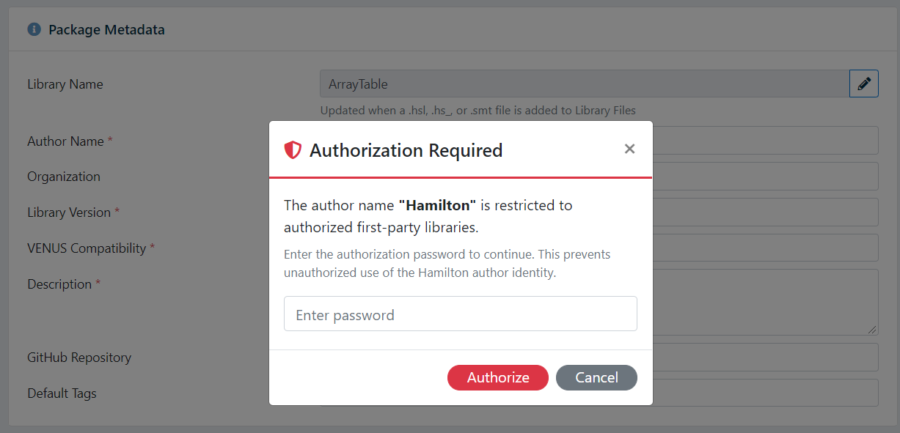
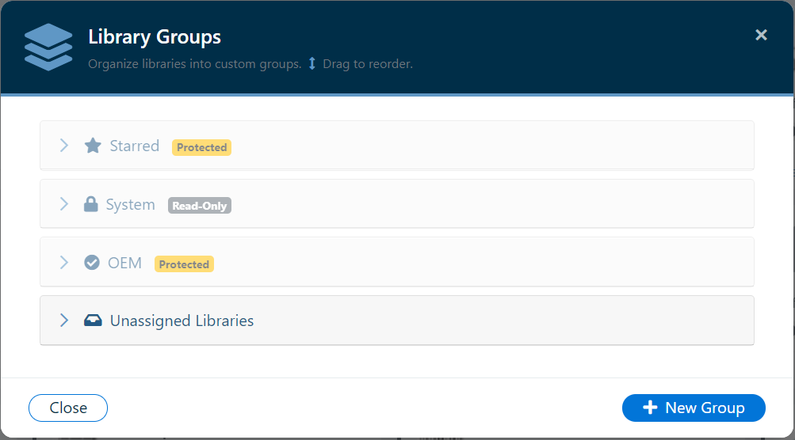
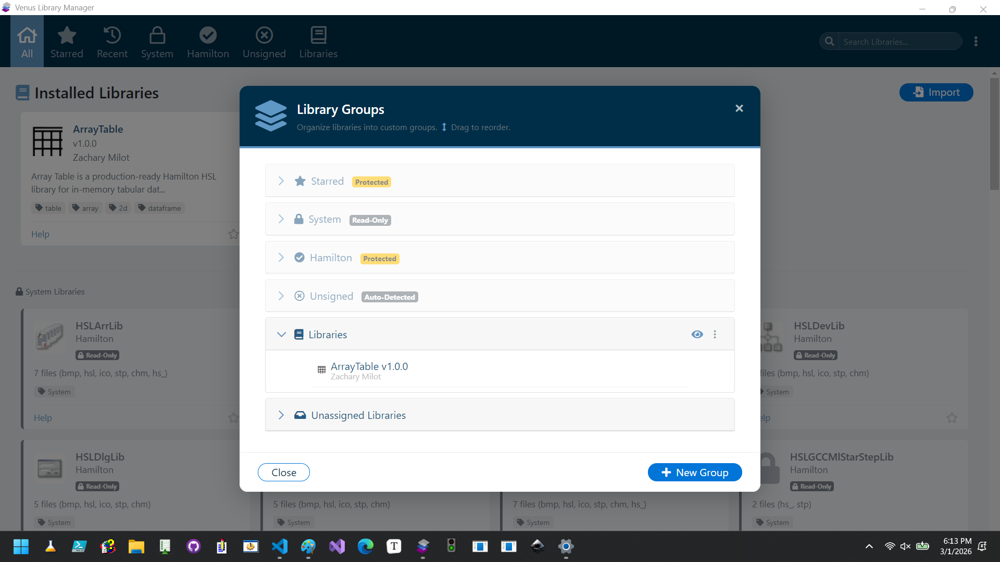

Overview
Library Manager for Venus 6 supports organizing installed libraries into custom groups for easier navigation and management. Groups appear as tabs in the main window, allowing you to filter the library view to show only libraries assigned to a specific group.
Default Groups (Hardcoded)
The application defines seven built-in groups that are hardcoded in the application source code via a DEFAULT_GROUPS map. These groups are never stored in groups.json - they are resolved in-memory at runtime. A startup migration automatically strips any stale default-group records from the external JSON file to prevent duplicates.
| ID | Name | Icon | Side | Purpose |
|---|---|---|---|---|
gAll | All | fa-home | left | Shows all installed (non-deleted) libraries |
gRecent | Recent | fa-history | left | Recently imported libraries |
gStarred | Starred | fa-star | left | Libraries marked as favorites by the user (see GUI Overview — Starred Libraries) |
gHamilton | Hamilton | fa-check-circle (solid) | left | Protected Hamilton-authored libraries |
gFolders | Import | fa-download | right | Import workflow tab |
gEditors | Export | fa-upload | right | Export workflow tab |
gHistory | History | fa-list | right | Action history |
User-created groups are stored in groups.json with "default": false and auto-generated _id values.
Hamilton Default Group
The Hamilton group (gHamilton) is a special protected group that ships with the application. It is designed to contain libraries authored by Hamilton and is distinguished from regular custom groups in several important ways:
Protection
- Non-deletable and non-renamable - The Hamilton group has
"protected": truein theDEFAULT_GROUPSmap, preventing users from deleting or renaming it through the settings panel. - Always visible - It appears in the left-side navigation between the System libraries group and user-created groups. It cannot be hidden.
- Solid checkmark icon - Uses the Font Awesome 5 Solid
fa-check-circleicon to visually distinguish it from user-created groups.
Password-Protected Author Name
The author name "Hamilton" is restricted to prevent unauthorized attribution of packages to Hamilton. This restriction is enforced in both the GUI and CLI:
- GUI: When a user enters "Hamilton" (case-insensitive) as the author in the Library Packager, a password prompt modal (
#authorPasswordModal) is displayed. The modal appears when the author field loses focus. The user must enter the correct password before the package can be built. If the password is incorrect or the modal is dismissed, the author field is cleared. - CLI: When the spec file contains
"author": "Hamilton", the--author-passwordflag must be supplied on the command line. If the password is missing or incorrect, the CLI exits with an error.

Empty State
When no Hamilton-authored packages are installed, the Hamilton tab displays a dedicated placeholder message: "No Hamilton packages installed yet. Import a Hamilton-authored library package to see it here."
Managing Groups
Creating a Group
Create new groups from the Settings panel. Each group has a name and an icon class. New groups are added to the navigation tree and immediately become available as filter tabs.

Renaming and Deleting Groups
Groups can be renamed or deleted from the Settings panel. Deleting a group does not delete the libraries assigned to it - they become "unassigned" and remain visible in the All view.
Reordering Groups
Drag-and-drop reordering is supported in the Settings panel. The order you set determines the tab display order in the main window.
Assigning Libraries to Groups
Automatic Assignment
When a library is imported, it is automatically assigned to the first non-default custom group. If no custom groups exist, a default group named "Libraries" is created and the library is assigned to it.
This behavior is always enabled and cannot be disabled in the GUI. CLI imports can bypass it with the --no-group flag.
Manual Assignment
In the Settings panel, libraries can be drag-and-dropped between groups. An "Unassigned Libraries" pseudo-group shows all libraries that are not currently in any group.

Group Visibility
Groups can be shown or hidden in the navigation using the favorite/show-hide toggle. Hidden groups and their assigned libraries still exist but are not displayed as navigation tabs.
Data Persistence
Default groups (All, Recent, Hamilton, Import, Export, History) are not stored in groups.json. They are defined in a hardcoded DEFAULT_GROUPS map in the application source code and resolved in-memory. Only user-created custom groups are stored in groups.json.
Group-to-library assignments are stored in tree.json within the user data directory. See Data Model & Persistence for details.
Group Record Structure (User-Created Groups)
{
"_id": "abc123",
"name": "Pipetting Libraries",
"icon-class": "fa-book",
"default": false,
"navbar": "left",
"favorite": true
}Tree Assignment Structure
{
"group-id": "abc123",
"method-ids": ["lib-id-1", "lib-id-2", "lib-id-3"],
"locked": false
}Unsigned Group
When the Unsigned Libraries feature is enabled and at least one unsigned library has been discovered by scanning, a special Unsigned group is injected into the navigation bar. This group is distinct from both default and custom groups:
- Uses the
far fa-times-circleicon - Appears after the Hamilton group in the left navigation
- Locked - libraries cannot be dragged into or out of it
- Not stored in
tree.jsonorgroups.json- it is generated dynamically - Not included in the sortable group ordering
- Hidden automatically when the feature is disabled or no unsigned libraries exist
See Unsigned Libraries for full details on enabling and using this feature.